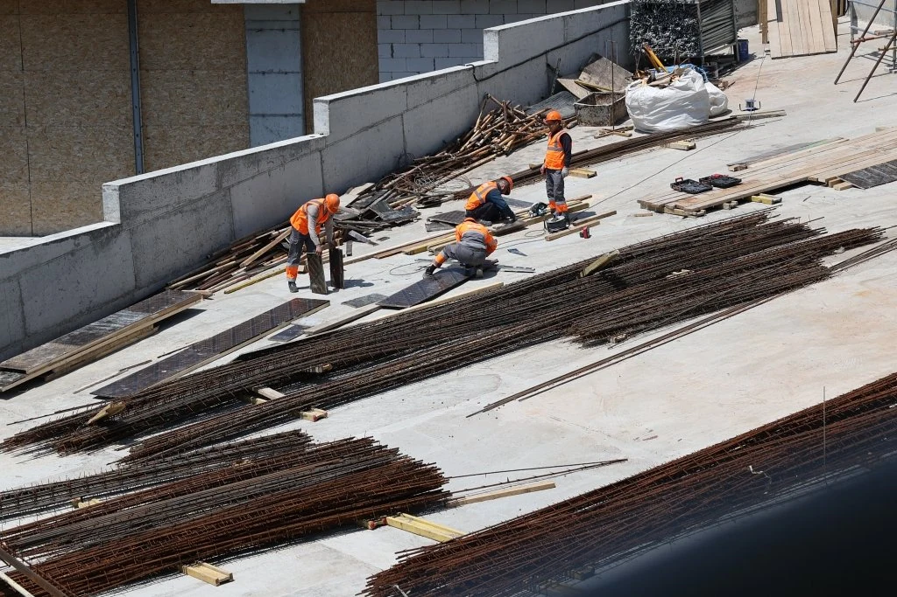
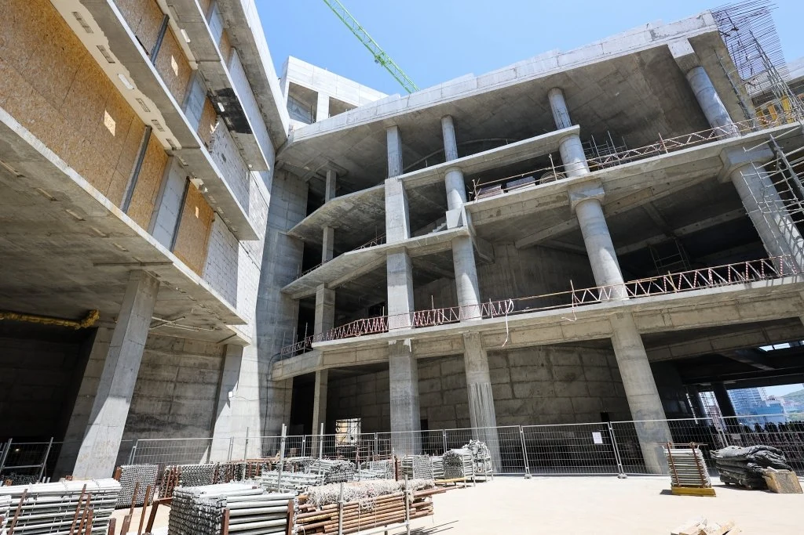
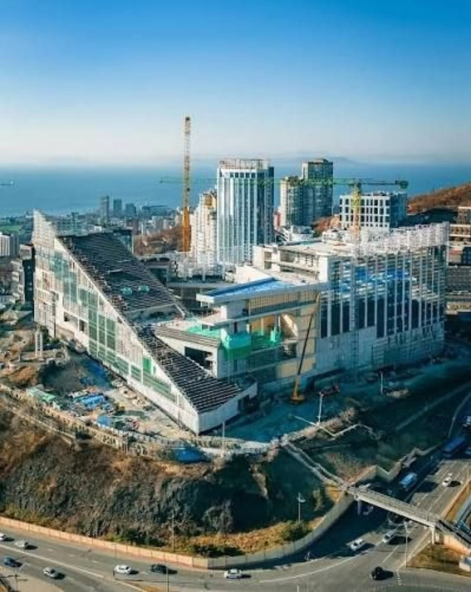

Задача
Монтаж светопрозрачных алюминиевых конструкций музейно-театрального комплекса во Владивостоке.
Наш крупнейший проект
С 2025 года · в работеСложная геометрия.
Светопрозрачный фасад.
Масштаб, который виден городу.
Владивосток, ул. Аксаковская, 13

Наше участие
Монтаж светопрозрачных алюминиевых конструкций музейно-театрального комплекса во Владивостоке.
Крупный общественный объект со сложной архитектурной геометрией фасадов.
Монтаж алюминиевых конструкций на нескольких участках объекта.
Дневник большого проекта / 2025–2026
Фотохроника строительства
от каркаса до остеклённого фасада.
Сентябрь 2026
Общий вид комплекса на сопке Орлиное Гнездо. На снимке видны протяжённый остеклённый фасад, объёмы здания и его положение над бухтой Золотой Рог.
Июнь 2025
Строительство продолжается на нескольких участках. На фотографии из публикации — работа на открытой части комплекса и материалы для следующих этапов.

Май 2025
Объём здания уже читается в железобетонном каркасе. Фотография показывает внутреннюю геометрию комплекса, перекрытия и открытые участки будущего фасада.

Из портфолио компании
Галерея объекта. Для архивных снимков точная дата съёмки не указана.

Музейно-театральный комплексЛистайте фотографии или откройте на весь экран
Направления проекта
Ваш следующий объект
Расскажите о конструкциях, объёме и условиях площадки. Обсудим, как организовать работы.
Обсудить объектДобавить объект в PDFПродолжить знакомство


{kind=link}
{kind=link}